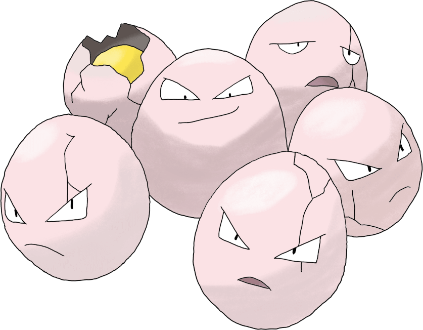

Three Hens, Three Eggs, Three Days

I read a blog post about cognitive biases this week that included this word problem.
"3 hens lay 3 eggs in 3 days. How many eggs do 12 hens give in 12 days?"
It was presented to grade school children, and everyone, including the teacher but excluding the post's author, thought the answer was 12 eggs.
The correct answer
The correct answer is 48 eggs. The correct way to find the answer is to deduce logically that when 3 hens, total, lay 3 eggs, total, in 3 days, that means each hen takes 3 days to lay a single egg.
12 days divided by 3 days is 4. A single hen will lay 4 eggs in 12 days. Multiply 4 eggs by 12 hens and there will be a total of 48 eggs.
The counter-example
This word problem reminds me of Brooks's law, popularly shared as:
"nine women can't make a baby in one month"
Seems like a good counter-example to help those who find the answer to the hens problem to be 12.
9 women can make 9 babies in 9 months. How many babies can x women make in x months, where x is less than 9?
Right answer, wrong method
The hens problem has some implied logic to it that can trip up the mind. If it was worded as "3 hens lay 1 egg each over the course of 3 days", I doubt there would be any difficulty to this problem at all. But the way it's worded is purposely ambiguous and implies prior knowledge of how hens lay eggs.
Let's strip all of the implicit knowledge from the problem. 3 widgets produce 3 gizmos in 3 days. How many gizmos do 12 widgets produce in 12 days?
We don't really know how widgets produce gizmos. We only know that 3 widgets produce 3 gizmos in 3 days. For all we know, producing gizmos is a group effort and 3 widgets are able to collaborate such that they can create 1 gizmo every day.
If we assume that, 3 widgets can create 12 gizmos in 12 days. 12 widgets is 4 times as many as 3 widgets, so they should be able to create 4 times as many gizmos in the same amount of time. 12 gizmos times 4 is 48 gizmos.
That's still the right answer despite coming to the wrong logical conclusion about how a widget hen produces a gizmo an egg. In fact, I suspect that the numbers 3 and 12 were specifically chosen for this word problem exactly so that division leaves no remainder, meaning that either approach results in the correct answer.
If the number of days and hens was 13, for example, they'd lay 52 eggs. A hen either lays an egg or doesn't. It doesn't lay a third of an egg per day.
In the case of widgets and gizmos, we'd have to decide whether a single widget would be able to produce a single gizmo in 3 days, or if a gizmo is unable to be produced at all without 3 widgets participating.
Pattern recognition
The typical reason as to why a person might jump to the conclusion that the answer is 12 eggs is that they see a pattern in the numbers.
3, 3, 3, 12, 12, ?
This is probably the correct answer to why people would answer "12 eggs". The brain is a connection-making machine, for better and worse. But is 12 a valid answer to this question, or are we being deceived?
This is a common format for SAT questions. You are given a sequence of numbers and asked to give the next number in the pattern. It's considered such a fundamental logic problem that there are versions for younger people that use shapes and colors.
These SAT questions are often multiple choice. The test-taker is given three or four possible answers and a choice of "not enough information", meaning there's either no discernible pattern, or there are multiple possible patterns and you haven't been given enough of the sequence to discern one and only one pattern.
I hate these questions. As I said, the brain is a connection-making machine. We find patterns where there aren't any.
In this case, I would argue that the correct answer would actually be "not enough information".
The next number in the sequence could be 12. The pattern would start with a sequence of three numbers. To determine the next number in the pattern, find the number in the sequence whose index is 3 less than the number we're trying to determine and multiply that number by 4.
3, 3, 3, 12, 12, 12, 48, 48, 48, 192, 192, 192...
However, let me offer an alternative pattern that also fits. The next number in the sequence could be 48. In this alternative pattern, we're looking at two sequences in one. One sequence is, like the previous one, taking the previous value and multiplying it by 4. But also, the number of times that value is repeated in the sequence is reduced by 1 each time. The next number in that sequence is the last number in the sequence since the number of repetition would be zero for the next iteration.
3, 3, 3, 12, 12, 48.
The sequence can't go any further forward, but it could go on backwards towards infinity.
...³⁄₁₆, ³⁄₁₆, ³⁄₁₆, ³⁄₁₆, ³⁄₁₆, ¾, ¾, ¾, ¾, 3, 3, 3, 12, 12, 48.
Therefore, the correct answer to the question of what the next number in the sequence 3, 3, 3, 12, 12, ? cannot be determined without more information about the sequence.
The moral
The moral to the story, if there is one at all, is not to trust your lizard brain when it comes to logic problems. Or trust, but also verify. Our brains are so good at finding patterns and correlations, we tend to see them where they don't exist at all.
Wanna see more chicken-egg-day shenanigans? I wrote even more about this the day after this post.